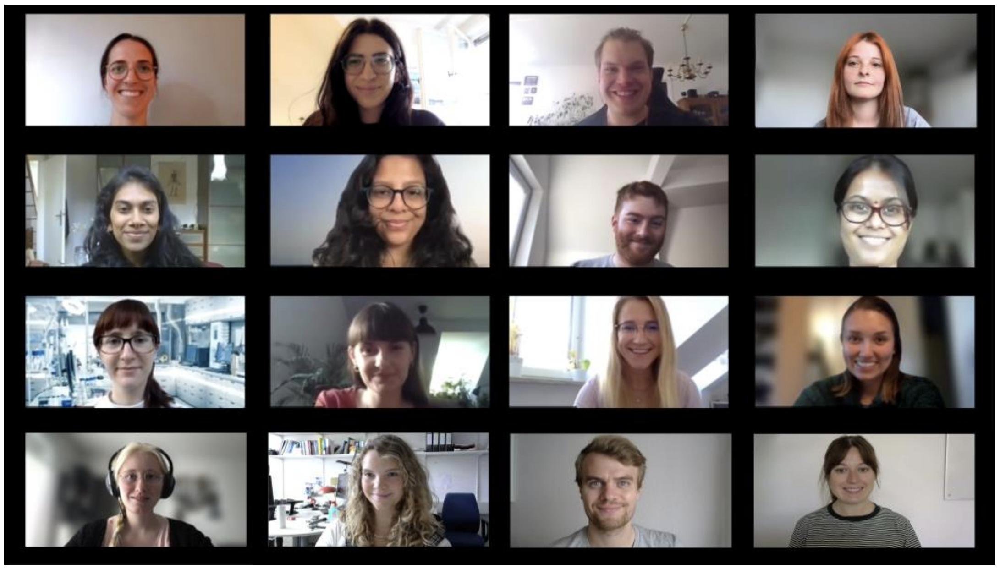

Ever wondered how we know what we know about the brain? How scientists and doctors try (and succeed, and fail) to apply this knowledge to improve the lives of those who suffer?
The IMPRS-TP PsyComm group is a group of doctoral students who believe in the importance of communicating science to the general public and especially to children and adolescents, in an effort to foster scientific thinking from early on. Our goal is to educate the general public, starting from a young age, about mental health and mental illnesses. This way, we hope to raise awareness and reduce stigma associated with them.
With this in mind, we designed a booklet to give an overview of the fundamentals of mental health and mental health awareness. In simple terms that aim to be accessible to children, we narrate the basics of brain anatomy and function, and what we know about how mental illnesses can occur. Moreover, we delve into genetics and into the influence of the environment on our behavior, conveying that, contrary to the popular false dychotomy, both nature and nurture are important in shaping who we are.
All in all, the chapters in this book will help you (and/or your kids) understand the scientific principles underlying mental function, illness, and the research process.
You can the full English booklet here. The official German translation, as well as an unofficial Spanish version can be downloaded here and here, respectively. Enjoy!
If you have any questions or feedback, feel free to reach out to us at imprs-tp-scicomm@psych.mpg.de. We are always happy to hear from you!
Personally, I’d like to take a moment to thank each and every one of the members of the group. It was a pleasure to work with you all, and I’m proud of what we’ve accomplished together. At the moment of writing, many of us have already graduated and moved on, but I’m looking forward to seeing what the future holds for new members!

Members involved in writing and editing (top-left to bottom-right): Lea Brix, Anthi Krontira, Marius Stephan, Elena Brivio, Sowmya Narayan, Adyasha Kunthia, Lucas Miranda, Srivaishnavi Loganathan, Anna Fröhlich, Anna Zych, Muriel Frisch, Cassandra Deichsel, Linda Dieckmann, Mira Erhart, Nicolas Rost, and Julia Fietz. Ane Ayo Martin is not in the picture.